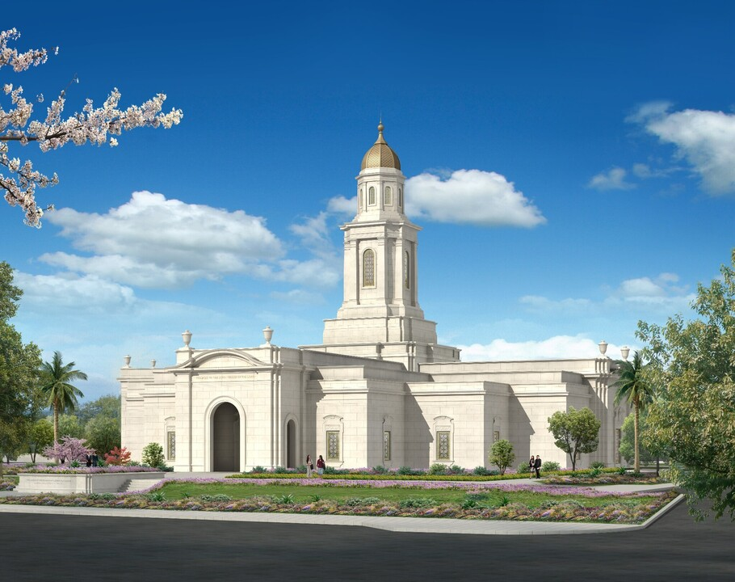

Temple Album
≡
Home
Old
New
Large
Small
Home

Bacolod Philippines Temple
Cagayan de Oro Philippines Temple
Alabang Philippines Temple
Cebu Philippines Temple
Davao Philippines Temple
Laoag Philippines Temple
Manila Philippines Temple
Urdaneta Philippines Temple
Kaohsiung Taiwan Temple